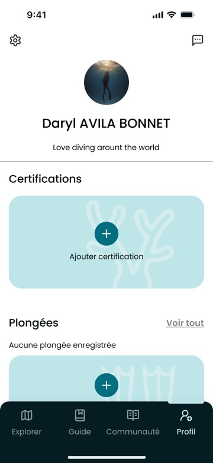
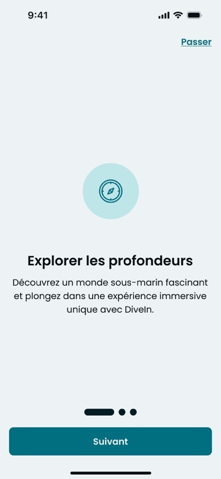
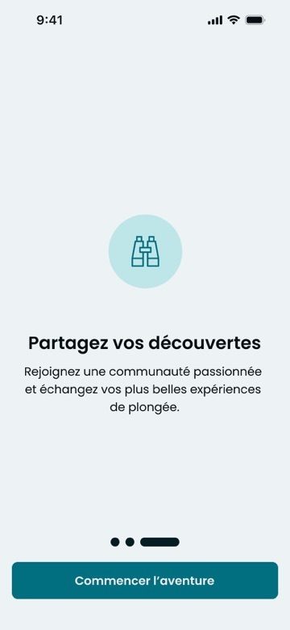
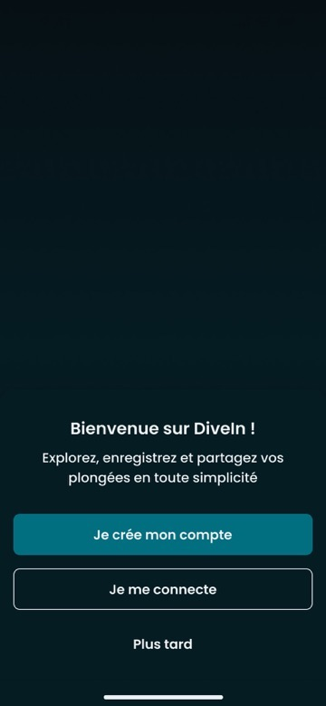
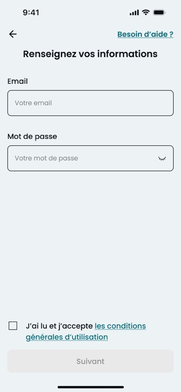
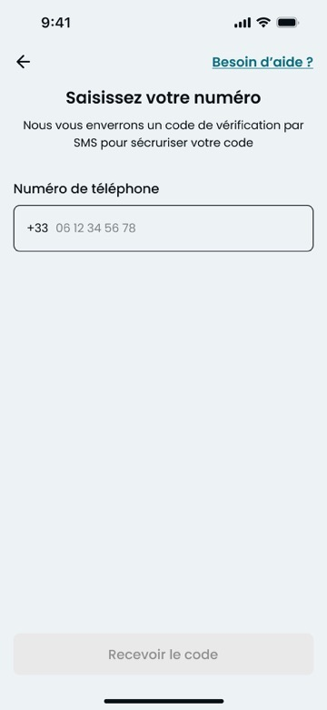
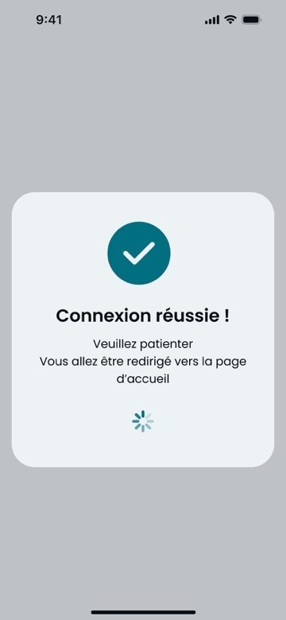
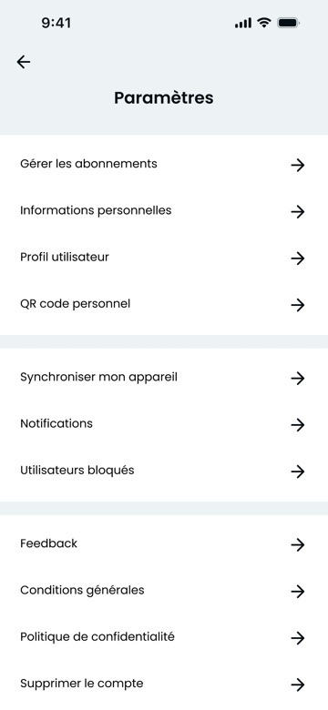
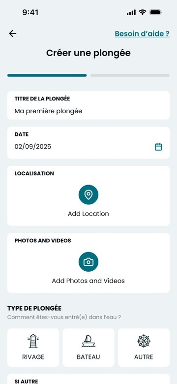
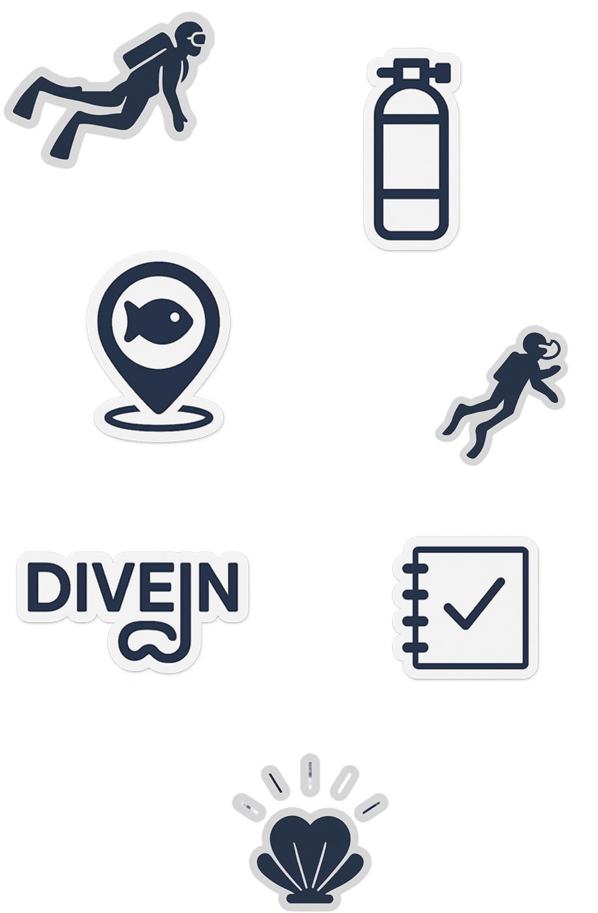

Simple above all
Even someone on their first-ever dive should be able to use the app without a tutorial. No jargon, self-explanatory icons.
In V1: one-tap choices, illustrated with icons.
A mobile app for recreational divers: log each dive in seconds, even with no signal, find it again, share it and keep a real memory of it.



In my family, diving runs deep. My dad keeps handmade logbooks, laminated, decorated with stickers and carefully stamped. Mine always ended up soaked at the bottom of my dry bag.
In France, there are between 400,000 and 500,000 active divers, who make 8 dives a year on average. Yet very few use a digital tool to keep track of their dives.
To log their dives, recreational divers today have to choose between:
How do you design an intuitive, community-driven app that works offline and turns every dive into a memory?
Four insights guided the whole design:
Beginners get lost, and even experienced divers won't spend 20 minutes logging a dive.
People still love paper logbooks, but they get wet, forgotten or lost.
On a boat, there isn't always a signal. The app has to work without it.
Divers want to tell the story of their dives and spots, not just list numbers.
“If it's more complicated than a selfie, I give up.”
Motivated but not patient, she wants reassurance, visual cues and an interface that doesn't talk to her like a technical manual.
“If I didn't write it down, it didn't happen.”
The keeper of his memories, he wants to find all his dives in one click, compare his stats and print everything into a beautiful keepsake.
Alain is my dad. Alice reminds me that simplicity is part of design. Every feature decision was made with both of them in mind.
The opportunity: no app combines simplicity, offline use and the memory side all at once.
Four principles drawn from the research, used as a filter for every decision.
Even someone on their first-ever dive should be able to use the app without a tutorial. No jargon, self-explanatory icons.
In V1: one-tap choices, illustrated with icons.
On a boat, there's no signal. Everything is saved on the phone, then synced back on land.
During testing: offline mode, described as “a real plus”.
A dive isn't just measured, it's relived: photos, species spotted, stories.
In V1: a feeling and a story for every dive.
Sharing with your buddies and clubs, with no race for likes and no pointless noise.
In V1: a feed where every diver shares their dives.
To launch a useful version quickly, I sorted the features with the MoSCoW method, cross-checked with field feedback. The rule: a feature only goes into the MVP if it brings immediate, measurable and differentiating value.
I tested the high-fidelity Figma prototype with several profiles: beginners, experienced divers and clubs. The most telling test: my dad's, who has kept a paper logbook since 1997.
“Honestly, it's super clear. It took me less than 2 minutes to log my dive… and I didn't have to look for where to tap.”
“Offline mode is a real plus. I could fill it in right there on the boat.”
“It reminds me of my logbook, but neater… and above all, no risk of getting it wet!”
Two ideas kept for the next version.
The high-fidelity prototype designed in Figma and tested with divers. Seventeen screens, grouped by flow.














The name reads “Dive In”: jump right in. In the logo, the “I” becomes a snorkel paired with a mask: the gear that makes immersion possible, as if you were putting on your snorkel before entering the app.
The components follow the same logic: a flat design, readable in full sun on a boat, and simple icons that borrow the language of diving.

The DC START project is over, but the adventure continues: the app is going to be rebuilt. The next step is to start again from this prototype and the test feedback to design a new version, then have it tested again by beginner and experienced divers.
Download the full report (in French)PDF · 106 pages · strategy, research, design and business plan↓Open to a permanent role · Paris area
I'm looking for a team where I can design useful products, from the field all the way to code. Let's talk.